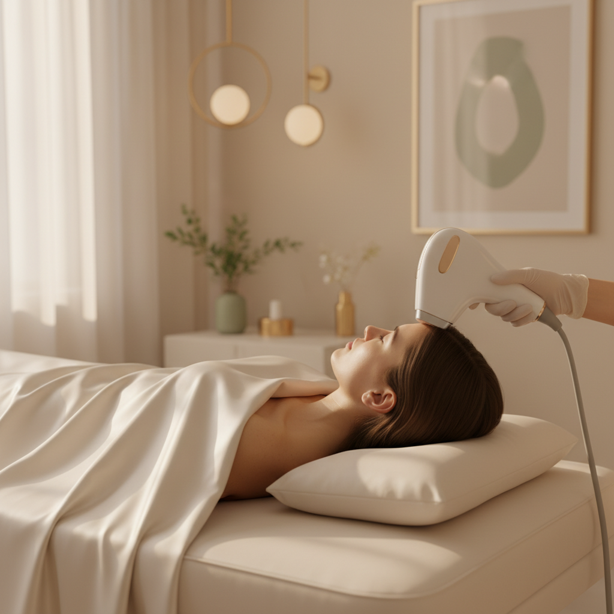
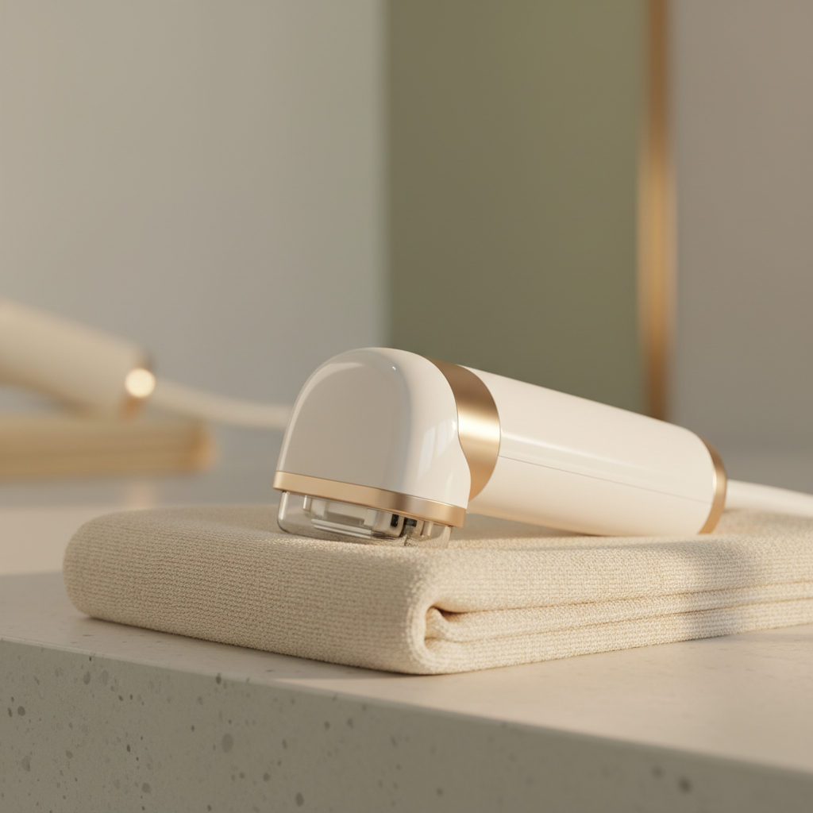

Equipo médico estable en Benissa, entre Calpe y Moraira. Tratamientos faciales, corporales y de fisioterapia con un enfoque conservador, técnico y tranquilo — pensado para acompañar a residentes y a la comunidad internacional de la Costa Blanca.

Filosofía de la casa: leer cada rostro con calma antes de tratarlo.
Cada área tiene un protocolo propio. Lo que se mantiene es el criterio: diagnóstico antes que técnica, resultado natural antes que efecto inmediato.
Ácido hialurónico, toxina, bioestimulación con PRP, peelings médicos. Volúmenes y expresión sin perder los rasgos.
Ver protocolosUltrasonido focalizado de alta intensidad, hilos tensores y endolift. Reafirmar óvalo facial y cuello sin cirugía.
Ver tecnologíaCirugía menor facial y trasplante capilar bajo dirección médica. Indicación quirúrgica solo cuando aporta resultado.
Consultar casoFisioterapia clínica, drenaje linfático manual, rehabilitación postural. El cuerpo entra en la misma conversación que la piel.
Sesiones disponiblesEl ultrasonido focalizado de alta intensidad llega a la capa SMAS — la misma que trabaja un lifting quirúrgico — y la estimula sin tocar la superficie. En Miramar lo trabajamos como protocolo central, con criterio clínico y seguimiento personalizado.

El efecto se consolida entre las semanas 8 y 12. Sin convalecencia, sin marcas. Se vuelve a la vida normal el mismo día.
No todas las pieles son candidatas. La consulta inicial define si HIFU es la indicación correcta o si hay un camino mejor.
Trabajamos el plano subdérmico con cabezales calibrados según zona — óvalo, cuello, escote o párpado superior.
El recorrido es el mismo para una primera consulta y para un seguimiento — porque la confianza también se cuida con orden.
Conversación abierta sobre qué se quiere mejorar y qué no se quiere cambiar. Sin presión, sin tratamiento ese mismo día.
Análisis de piel, expresión y volúmenes. Indicación médica con dos o tres alternativas según prioridades.
Calendario de sesiones, presupuesto cerrado y resultado esperado descrito por escrito antes de empezar.
Revisión incluida tras cada tratamiento. Ajustes mínimos sin coste si el caso lo requiere.
La primera visita siempre es presencial y sin compromiso. Para residentes internacionales, atendemos en inglés con la misma profundidad clínica.